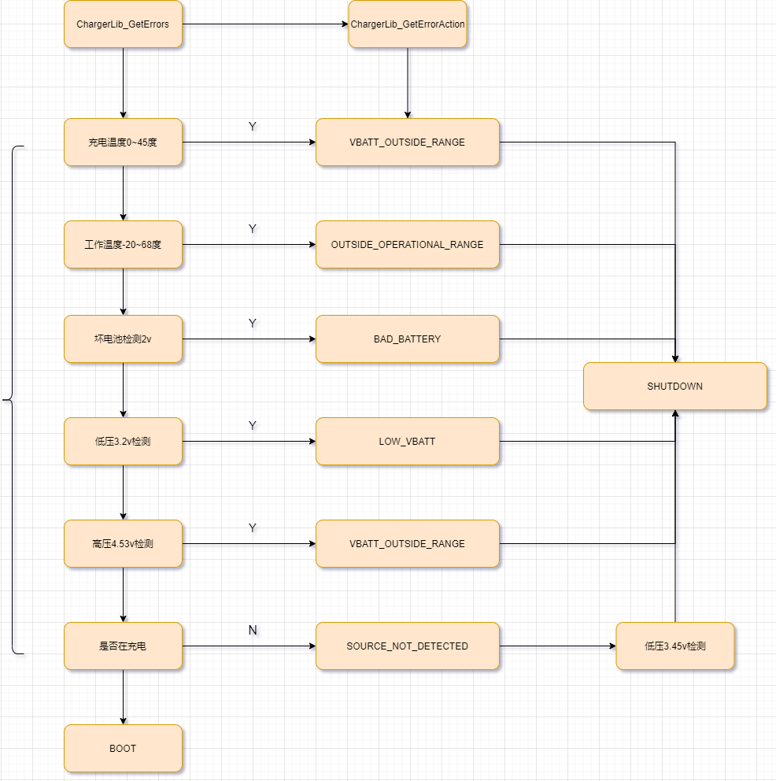

qcom XBL阶段电池电压检测流程
看一下xbl阶段电池电压检测流程。
流程图

APP程序流程
循环监控充电状态 QcomChargerApp_MonitorCharging()
* QcomChargerApp_Entry //入口函数
└── QcomChargerApp_MonitorCharging() //循环检测
├── pQcomChargerProtocol->GetChargingAction(&ChargingAction, &ChargerActionInfo, TRUE); //获取执行的结果ChargingAction,TRUE表示vbattChecking检测电池
├── QcomChargerAppEvent_HandleDispBattSymbol(); //获取要显示的图片
│ ├── Status = pQcomChargerProtocol->GetDisplayImageType(&DispImageType); //调用驱动GetDisplayImageType获取图片
│ └── QcomChargerAppEvent_DispBattSymbol(DispImageType); //显示图片类型
│ └── EFI_QcomChargerGetDisplayImageType //QcomCharger.c
│ └── ChargerLib_GetDisplayImageType((CHARGERLIB_EVENT_DISP_IMAGE_TYPE *)pDispImage) // ChargerLibCommon.c
│ └── ChargerLibTarget_GetDisplayImageType(pDispImage); //ChargerLibTarget.c
│ └── *pDispImage = gDispImage; //重要，下面分析
└── switch(ChargingAction) //执行开机或者关机动作
├── case EFI_QCOM_CHARGER_ACTION_GOOD_TO_BOOT: // 开机
│ ├── QcomChargerAppEvent_DisplayPanelOn(); /* Turn display panel ON */
│ └── ExitChargingLoop = TRUE;
└── case EFI_QCOM_CHARGER_ACTION_SHUTDOWN: //关机
└── Status = pQcomChargerProtocol->TakeAction(ChargingAction, &ChargerActionInfo);
从上图得知，app开启循环检测，GetChargingAction是最重要的。
驱动程序流程
首先看一下XBL阶段驱动流程是怎样的：
* QcomChargerInitialize //驱动入口
* gBS->InstallMultipleProtocolInterfaces( &ImageHandle, &gQcomChargerProtocolGuid, &QcomChargerProtocolImplementation, NULL ); //供app调用，包含GetChargingAction
* ChargerPlatform_Init(); //一些电池的初始化
看上去很简单，主要是供app调用的。
GetChargingAction流程
SocPkg/AgattiPkg/Settings/Charger/QcomChargerConfig_VbattTh.cfg:首先看一下电池的相关参数：
#Lowest Voltage at which device should shutdown gracefully
#value in mV
EmergencyShutdownVbatt = 3200
#Boot device to HLOS in case of unsupported battery or battery emulator. In millivolt*/
BootToHLOSThresholdInMv = 3450
BootToHLOSThresholdInMv_M9200 = 3200
#//[NEW FEATURE]-BEGIN by wugangnan@paxsz.com 2022-09-17, add bad battery check function
BadBatteryThresholdInMv = 2000
#//[NEW FEATURE]-END by wugangnan@paxsz.com 2022-09-17, add bad battery check function
#fastboot下载要求最小电压
SWFlashMinBattVoltageMv = 3500
[PlatformMTP]
## Parameter values with respect to MTP Platform (Platform 1)
# Configure FVMax and Fcc values
ChgFvMax = 4400
ChgFccMax = 2000
# Configure Battery Voltage and Current limit
#[BUGFIX]-BEGIN by (wugangnan@paxsz.com), 2022/09/21 Since the Bat_P pin is connected to Vsys,
#the maximum voltage of battery detection will be increased, and the detection threshold needs to be increased
#BattVoltLimHighDelta = 30
BattVoltLimHighDelta = 130
# Configure limits for Battery Temperature (For negative values, use negative sign. Ex: -30)
JeitaCriticalTempLowLimit = -20
JeitaHardColdLimit = 0
JeitaSoftColdLimit = 10
JeitaSoftHotLimit = 40
JeitaHardHotLimit = 45
JeitaCriticalTempHighLimit = 60
#Program device Skin and Charger Hot threhsolds
ProgramSkinAndChargerHotThreshold = FALSE
DeviceSkinHotInC = 70
DeviceSkinTooHotInC = 80
ChargerHotInC = 80
ChargerTooHotInC = 90
## TSENS ##
#High Temperature limit for thermal wait
TsensHighTemp = 85
#High Temperature limit for battey and device safety (battery disconnect)
TsensExtremeTemp = 90
#Low Temperature limit for end of thermal wait
TsensLowTemp = 75
# Give up time in thermal wait for battery disconnect - support up to 60min
TsensTimeoutMins = 90
软件流程：
* ChargerPlatform_GetChargingAction()
├── ChargerLib_GetErrors(vbattChecking, &ErrorType);
│ ├── Status = ChargerLib_GetBatteryPresence(&BatteryPresent);
│ ├── if(EFI_SUCCESS == ChargerLib_GetBatteryTempStatus(&BattTempStatus))//Check battery temperature related errors
│ │ ├── Status = ChargerLib_GetBatteryStatus(&BatteryStatus);
│ │ │ └── ChargerLibTarget_GetBatteryStatus(pBatteryStatus); //ChargerLibCommon.c
│ │ │ └── PmicQgProtocol->GetBatteryStatus(BatteryGaugeInfo.QGaugePmicInfo.PmicIndex,(EFI_PM_QG_BATT_STATUS_INFO *)&BatteryStatus); // ChargerLibTarget.c
│ │ │ └── PmicQg_GetBatteryStatus(PmicDeviceIndex, &stsInfo); //PmicQgProtocol.c
│ │ │ └── PmicQg_GetBatteryStatus(PmicDeviceIndex, &stsInfo); //这里是调用的最底层接口，获取电池电压电流温度
│ │ │ ├── errFlag = pm_qgauge_get_vbat(PmicDeviceIndex, &VBat);
│ │ │ ├── BattStsInfo->BatteryVoltage = VBat;
│ │ │ ├── errFlag |= pm_qgauge_get_ibat(PmicDeviceIndex, &ibat);
│ │ │ ├── BattStsInfo->ChargeCurrent = ibat;
│ │ │ ├── errFlag |= PmicQg_ReadBattTemp(&BattTemp);
│ │ │ └── BattStsInfo->BatteryTemperature = BattTemp;
│ │ ├── if((TRUE == HwJeitaStatus.JeitaHardCold) || (TRUE == HwJeitaStatus.JeitaHardHot))
│ │ │ └── *pBattTempStatus = ChargerLib_Batt_Temp_OutsideChargingRange; //电池超过充电温度 0 ~ 45度
│ │ ├── if(( BatteryStatus.BatteryTemperature < gChargerLibCfgData.fg_cfg_data.HwJeitaThreshold.JeitaCriticalTempLowLimit) ||
│ │ └── ( BatteryStatus.BatteryTemperature > gChargerLibCfgData.fg_cfg_data.HwJeitaThreshold.JeitaCriticalTempHighLimit))
│ │ └── *pBattTempStatus = ChargerLib_Batt_Temp_OutsideOperationalRange; //如果电池超过68度或者小于-20度
│ ├── if(ChargerLib_Batt_Temp_OutsideOperationalRange == BattTempStatus)
│ │ └── *pChargingError = CHARGERLIB_CHARGING_ERROR_BATT_TEMP_OUTSIDE_OPERATIONAL_RANGE; //电池超过工作温度
│ │ └── return Status; //Got Critical error, return
│ └── if (vbattChecking)
│ ├── if(EFI_SUCCESS == ChargerLib_GetBatteryVoltageStatus(&BattVoltageStatus))
│ │ ├── if(ChargerLib_VBatt_BelowThresholdBad == BattVoltageStatus) //电池电压小于2v
│ │ │ └── *pChargingError = CHARGERLIB_CHARGING_ERROR_BAD_BATTERY; //坏电池
│ │ ├── if(ChargerLib_VBatt_TooHigh == BattVoltageStatus) //电池电压过高 高于ChgFvMax + BattVoltLimHighDelta 目前是4.53v
│ │ │ └── *pChargingError = CHARGERLIB_CHARGING_ERROR_VBATT_OUTSIDE_RANGE;
│ │ └── else if(ChargerLib_VBatt_BelowThreshold == BattVoltageStatus) //电压过低 这里是小于3.2v
│ │ └── *pChargingError = CHARGERLIB_CHARGING_ERROR_LOW_VBATT;
│ └── Status = ChargerLib_GetChargingPath(&AttachedCharger); //获取充电状态
│ ├── ChargerLibTarget_GetChargingPath(ChargingPath);
│ │ └── PmicSchgProtocol->UsbinValid(ChargerInfo.ChargerPmicInfo.PmicIndex, &IsInputValid);
│ ├── if ((CHARGERLIB_ATTACHED_CHGR__BATT == AttachedCharger) || (CHARGERLIB_ATTACHED_CHGR__NONE == AttachedCharger)) //没充电
│ │ └── *pChargingError = CHARGERLIB_CHARGING_ERROR_CHARGING_SOURCE_NOT_DETECTED;
│ └── if(ChargerLib_Batt_Temp_OutsideChargingRange == BattTempStatus) //电池超过充电温度
│ └── *pChargingError = CHARGERLIB_CHARGING_ERROR_BATT_TEMP_OUTSIDE_CHARGING_RANGE;
├── if((CHARGERLIB_CHARGING_ERROR_BATTERY_NOT_DETECTED == ErrorType ) || (CHARGERLIB_CHARGING_ERROR_DEBUG_BOARD == ErrorType ) ||
│ ├── Status = ChargerLib_GetErrorAction(ErrorType, (((CHARGERLIB_ERROR_ACTION_TYPE*)pActionType))); //除了电池电压判断一下，其他action都保持原样
│ │ └── ChargerLibTarget_GetErrorAction(ChargingErrorType, pErrorAction);
│ │ ├── DEBUG((EFI_D_ERROR, "not charging, Is USB Online:%X \n", AttachedCharger));
│ │ └── switch (ChargingErrorType)
│ │ ├── case CHARGERLIB_CHARGING_ERROR_BATTERY_NOT_DETECTED: //没检测到电池直接关机，这里我们模块的vbat_p连接的是vsys，所以无法判断。
│ │ │ ├── gDispImage = CHARGERLIB_EVENT_DISP_IMAGE_NOBATTERY;
│ │ │ └── *pErrorAction = CHARGERLIB_ERROR_ACTION_SHUTDOWN;
│ │ ├── case CHARGERLIB_CHARGING_ERROR_BATT_TEMP_OUTSIDE_OPERATIONAL_RANGE: //电池超过工作温度直接关机
│ │ │ └── *pErrorAction = CHARGERLIB_ERROR_ACTION_CRITICAL_SHUTDOWN;
│ │ ├── case CHARGERLIB_CHARGING_ERROR_ADC_ERROR:
│ │ ├── case CHARGERLIB_CHARGING_ERROR_FG_ERROR:
│ │ ├── case CHARGERLIB_CHARGING_ERROR_VBATT_OUTSIDE_RANGE: //高压4.53v以上
│ │ ├── case CHARGERLIB_CHARGING_ERROR_CHARGING_TIMEOUT:
│ │ ├── case CHARGERLIB_DEVICE_ERROR:
│ │ │ └── *pErrorAction = CHARGERLIB_ERROR_ACTION_SHUTDOWN;
│ │ ├── case CHARGERLIB_CHARGING_ERROR_CHARGING_SOURCE_NOT_DETECTED:
│ │ │ ├── if(BatteryStatus.BatteryVoltage < gChargerLibTargetCfgData.boot_to_hlos_threshold_in_mv) //不充电情况下，电池电压小于3.45v
│ │ │ │ ├── gDispImage = CHARGERLIB_EVENT_DISP_IMAGE_NOCHARGER; //重要 显示无充电器画面
│ │ │ │ └── *pErrorAction = CHARGERLIB_ERROR_ACTION_SHUTDOWN; //action是关机
│ │ │ └── else
│ │ │ └── *pErrorAction = CHARGERLIB_ERROR_ACTION_GOOD_TO_BOOT; //正常启动
│ │ └── case CHARGERLIB_CHARGING_ERROR_LOW_VBATT://小于3.2v也是直接关机
│ │ └── *pErrorAction = CHARGERLIB_ERROR_ACTION_SHUTDOWN_USB_DC_PON_DISABLED;
│ ├── PrevChargerAction = *pActionType;
│ └── return Status; //如果没充电直接返回
├── Status = ChargerLib_GetChargingPath(&pChargerActionInfo->ChargerAttached); //查看充电状态
└── if (((QCOM_CHARGER_PLATFORM_CHARGER_ATTACHED_USB == pChargerActionInfo->ChargerAttached))) //如果是充电状态
├── *pActionType = EFI_QCOM_CHARGER_ACTION_START_CHARGING;
├── *pActionType = EFI_QCOM_CHARGER_ACTION_GOOD_TO_BOOT; //目前是直接开机启动
└── Pax_ChargerEnable(TRUE); //使能charger ic充电
上面可以看到以下逻辑：
由于
sw_thermal_mitigation_enablethermal相关的宏没打开，只进行电池电压/温度判断，没有对thermal判断。